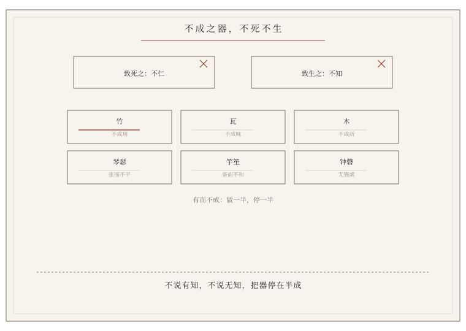

檀弓上 · 三·七十四 · 第 277 课
孔子曰：「之死而致死之，不仁而不可為也。之死而致生之，不知而不可為也。是故竹不成用，瓦不成味，木不成斫，琴瑟張而不平，竽笙備而不和，有鐘磬而無簨虡。其曰明器，神明之也。」
说什么事：送死者之物，若照着「死就是没了」去做，是不仁；若照着「死还有知」去做，是不智。所以明器都做成半成品——竹器没有收边，瓦器没有光泽，木器不加雕琢，琴瑟张了弦却调不平，竽笙齐备却不合调，钟磬有了却不挂上架。
落在哪一层：礼制的哲理内核。论「两不可为」与「不成之器」。
为何编在此位：上节论待客之丧，此节论送死之器。由一处哭位，进到全部丧器的形制，是本节之眼。
【经】孔子曰：「之死而致死之，不仁而不可為也。之死而致生之，不知而不可為也。是故竹不成用，瓦不成味，木不成斫，琴瑟張而不平，竽笙備而不和，有鐘磬而無簨虡。其曰明器，神明之也。」
【注】之，往也。死之、生之，謂無知與有知也。為，猶行也。成，猶善也；竹不可善用，謂邊無縢。味當作沫；沫，靧也。無宮商之調。不縣之也；橫曰簨，植曰虡。言神明死者也；神明者，非人所知，故其器如此。
【疏】此一节论生人于死者不可致死致生之事。之，往也。谓生者以物往送葬于死者，而致死之意，谓之无复有知，是不仁之事也，而不可为也；而虽死犹致生之意，是不知之事，而不可为也。何胤云：「谓死如草木无知，如此用情则不仁，不可行于世也；致此死者于全生之物，则不知而不可行也。舍此二涂，不仁不知之间，圣人之所难言，付之不测之竟。」圣人为教，使人子不死于亡者，不便谓无知，不生於死者，不便谓有知，故制明器，以神明求之——不死不生，不可测也。成，善也，故为器用并不精善也。竹不善用，谓竹器边无縢缘也。何胤云：「若全无知，则不应用；若全有知，则亦不应不成。故有器不成，是不死不生也。」「瓦不成味」者，味犹黑光也，今世亦呼黑为沫也；瓦不善沫，谓瓦器无光泽也。「木不成斫」者，斫，雕饰也。「琴瑟张而不平」，亦张弦而不调平也；「竽笙备而不和」，亦备而无宫商之调和也。「有钟磬而无簨虡」，簨虡，县钟磬格也，亦有钟磬而不用格县挂之。案《典庸器》云「大丧廞笋虡」，明知有而不县之也。横曰簨、植曰虡者，虡，距也，以用力，故曰虡也。神明微妙无方，不可测度，故云「非人所知」也。
之死 往死者处。之，往。
致死之 把他当作死的（即当作无知）。第一个「之」是动词，第二个「之」指死者。
致生之 把他当作生的（即当作有知）。
为 行。注「为，犹行也」。
成用 做成可用。
味 注「当作沫」，沫是洗面，引申为光泽。「瓦不成味」即瓦器不上光。
斫 雕琢。木不成斫，不加雕饰。
张而不平 张了弦却不调平。
备而不和 齐备却不合调，注「无宫商之调」。
簨虡 悬钟磬的木架：横者曰簨，竖者曰虡。
明器 送死者之器。注「言神明死者也」——把死者当作神明来待。
孔子说：往死者那里送东西，若把他当成就此没了，这是不仁，不能这么做；若把他当成还活着，这是不智，也不能这么做。所以送死之器都做成半成品：竹器不收边，瓦器不上光，木器不加雕，琴瑟张弦而不调平，竽笙齐备而不合调，钟磬有了却不挂上架。这类器物叫明器，是把死者当神明来待。
此节是全篇最见思辨的一段，结构极整齐：先立「两不可为」，再举六件「不成之器」，末以「神明之也」四字收。
两不可为：说死者无知，是不仁；说死者有知，是不智。两边都不能站，因为两边都是把一件不知道的事说成了知道的事。
于是圣人另开一条路：不说有知，也不说无知，只把器物做成半成品。竹器做而不收边，瓦器成而不上光，木器斫而不加雕，琴瑟张而不调，竽笙备而不和，钟磬有而不县——每一件都做到了「有」，又都停在「不成」。
疏引何胤说得最透：「若全无知，则不应用；若全有知，则亦不应不成。故有器不成，是不死不生也。」——不全废，也不全成，这就是「不死不生」。
第一层 「不仁」与「不知」各指什么 不仁，是薄待。把死者当作草木，送东西就成了敷衍，甚至可以不送。不知，是自以为知。把死者当作还活着，就要给他真车真马、真器真食，甚至殉人殉物。一端凉，一端热，都不是礼。
第二层 「不成」是留白，不是偷工 这六件器物不是次品，是刻意做成的半成品。疏说得很清楚：「故为器用并不精善也。」精善就是「成」，这里偏偏求其不成。做一半、停一半，是把那个「不知道」留在器物上——器物成了问题的形状。
第三层 「神明之也」的分量 注「言神明死者也；神明者，非人所知」。这句话把「不知道」从一个缺憾变成了一个位置：死者被安置在「神明」这个位置上，而神明的定义就是「非人所知」。所以不置可否不是回避，是把他放到该在的地方。
第四层 与 280 节对看（伏笔） 此节孔子立「两不可为」，下数节仲宪却把三代排成「夏示民无知、殷示民有知、周示民疑」三格，曾子两次「其不然乎」。同一件事，孔子留白，仲宪填格。此节与 280 节是一对，须连读。
与今日何干 今人对死，多走两端：一端是一切归于物质，告别即处理；一端是一切照生者办，房、车、钱、账号都要「给」到。此节说的是第三条：把器物做成半成品，把话停在「不知道」。这不是含糊，是承认界限之后的稳。
| 左 | 右 |
|---|---|
| 致死之 | 谓其无知 · 不仁 |
| 致生之 | 谓其有知 · 不知 |
| 竹不成用 | 边无縢 |
| 瓦不成味 | 无光泽 |
| 木不成斫 | 不加雕 |
| 琴瑟张而不平 | 弦不调 |
| 竽笙备而不和 | 无宫商之调 |
| 有钟磬而无簨虡 | 有而不县 |
| 明器 | 神明之也 |
| 神明者非人所知 | 付之不测 |
画一间明器作坊，视点略俯。案上并排六件器物，各停在未完工的一步：一只竹篮（口沿未收边，篾条露着茬口）、一只陶罐（表面哑然无光）、一块木器（素面未雕）、一张琴（弦已张而散着，未上轸）、一排竽管（齐备而高低不齐）、一口小钟（旁边一只空木架，钟未挂上）。案后一位老者（深衣、正面、手停在半空未落下）。不写文字、不画人面细节。赭色只用在竹篮露出的篾茬与那口未挂的钟的钟钮。
